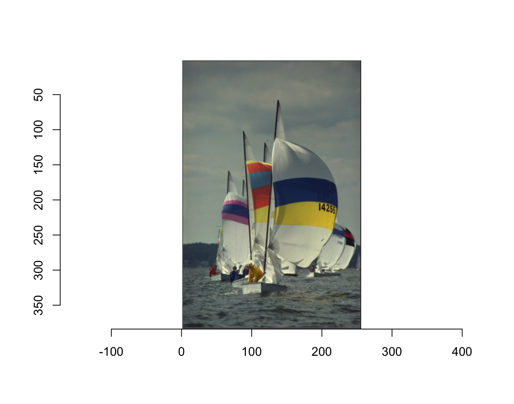
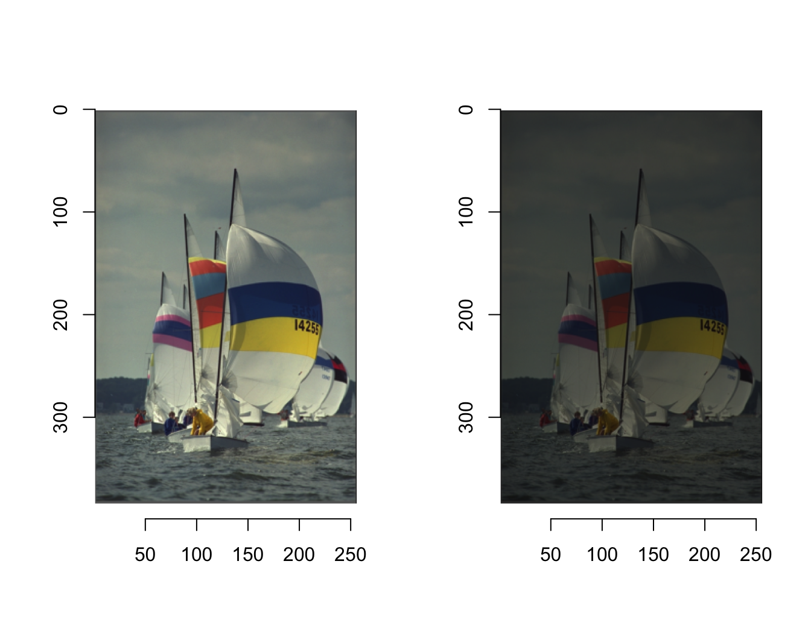
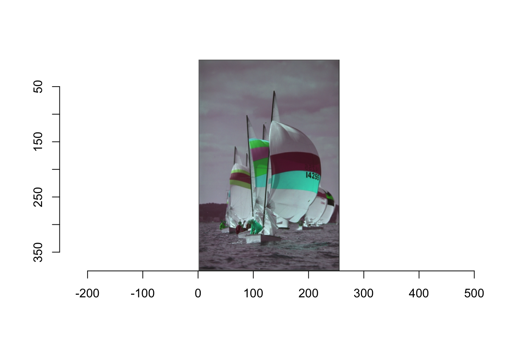
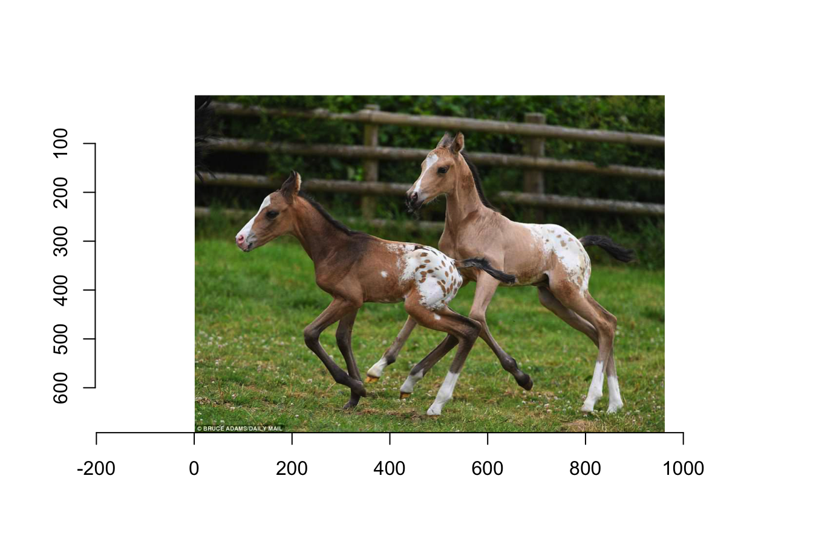
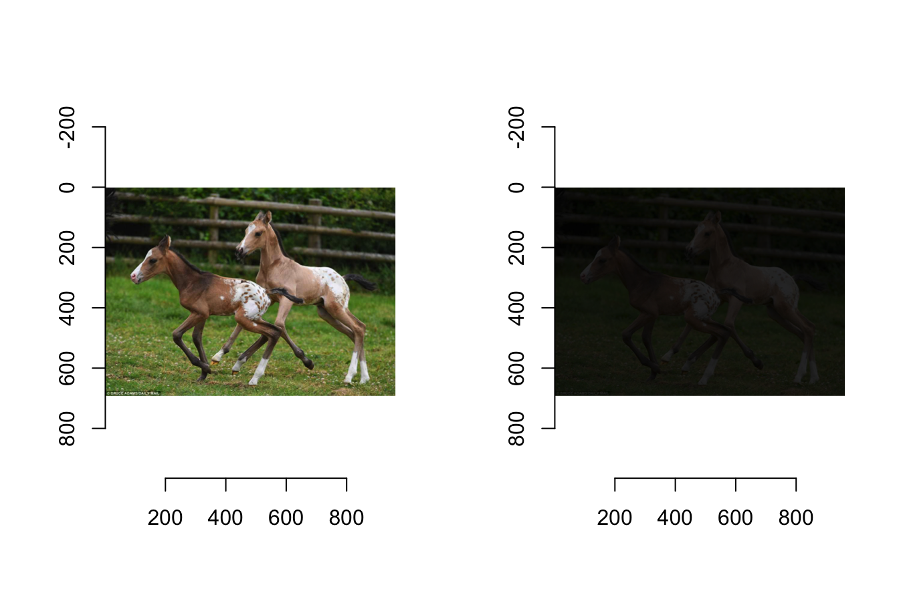

Chapter 11 Imager Tutorial
Author: Ana-Louise Franz
11.0.1 XQuartz
Note: If you are using a mac, you must install XQuartz before loading imager. It is a download that was created by Apple as “a community effort to fruther develop and support X11 on Mac”, something which is no longer included with Macs (Mac Support). XQuartz can be downloaded here.
11.1 Using imager
11.1.1 Loading imager
Once XQuartz is downloaded, the package must be installed from CRAN. Once in, you can call it using the library call.
library(imager)11.1.2 Pre-loaded images
Imager has a pre-loaded image called “boats”. You can use this image to investigate a number of interesting features of imager. Firstly, in order to view the image as an image you must use the “plot” call.
plot(boats)
The image is only displayed as an picture using the plot call because on the back end of R Studio, the image is saved as an array of numbers, called an imager-array. You can get some basic information about the image by simply calling the image. However, as you see this does not result in a picture being displayed.
boats## Image. Width: 256 pix Height: 384 pix Depth: 1 Colour channels: 3You are given the dimensions of the image, in pixels as well as well as the depth and the number of color channels. When the depth is over 1, there are multiple frames and it is actually a movie.
11.1.3 Imager Math
Because the images are stored as numbers, you can do math with the values themselves. For example, you can find the mean of the image “boats”.
mean(boats)## [1] 0.5089061Though the value of 0.5089061 is not able to be visualized using imager, you can see the results of math on images using specific calls.
You can divide “boats” by 2. In order to view both the original image as well as the edited image we have to add a few calls. First, we must change the layout so we can see both images in the same frame. Additionally, the plot call automatically rescales images to originial size and color. In order to stop this and be able to see the difference between the two images you must set re-scale=FALSE.
layout(t(1:2))
plot(boats,rescale=FALSE)
plot(boats/2,rescale=FALSE)
11.1.4 Changing the color scheme of an image
Within the “plot”" call, you can also change the color scheme of the image. “rgb” defines the order of the colors and their corresponding numeric value. You are able to change this order using a function displayed below. This function, replaces red with green, and green with red and leaves blue the same. Then, included in the “plots” call, you can define a specific “colourscale”" that you have previously defined. Once again including “re-scale” will ensure that the resulting plot is not re-scaled to the original.
cscale <- function(r,g,b) rgb(b,r,g)
plot(boats,colourscale=cscale,rescale=FALSE)
11.1.5 Loading Your Own Images
You are also able to load and edit your own images in imager. You can do this by using the “load.image” call. You can load images directly from the web using the URL. You can also load images from your computer. Saving them in the same project and specific folder you are using will make the call much simpler. As you can see below, I saved the image “horses” as a jpeg (ending in .jpg) in the folder that I also had my .rmd file.
horses <- load.image("horses.jpg")
plot(horses)
You can perform similar math manipulations using the image that you loaded.
layout(t(1:2))
plot(horses,rescale=FALSE)
plot(horses/5,rescale=FALSE)
11.2 Other Things You can do in imager
The functions shown in this tutorial are just the beginning of what you can do with imager. You can edit, re-size and warp images, along with other cool editing.
Simon Barthelmé has written a few very interesting step by step tutorials for various editing strategies in imager. You can find all of his work in the references page.
11.3 Referenes
Mac Support, (2017, May 02). About X11 for Mac. Retrieved from https://support.apple.com/en-us/HT201341
Barthelmé, S. (2019, January 21). Getting started with imager. Retrieved from https://cran.r-project.org/web/packages/imager/vignettes/gettingstarted.html